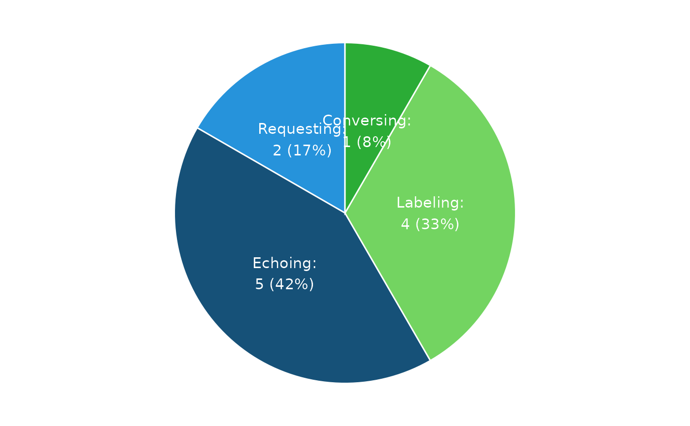

Plot a VOX Pie Chart
plot_vox_piechart.RdThis function generates a VOX pie chart that visualizes the distribution of response types (Conversing, Labeling, Echoing, Requesting) for a single evaluation date.
Arguments
- df_summarized_response
A `data.frame` summarizing each verbal operant (Conversing, Labeling, Echoing, Requesting) for a given evaluation date. This summary provides a condensed view of responses and can be produced using the `util_summarize_response` function.
- ind_doc_version
Logical. If `TRUE`, adjusts font sizes for Word document compatibility. Defaults to `FALSE`.
Examples
# Load example data
library(dplyr)
data("df_summarized_response_example")
# Filter to a single evaluation date, as the pie chart works with one date at a time
dat <- df_summarized_response_example %>%
filter(date_of_evaluation == max(date_of_evaluation))
# Generate the VOX pie chart
plot_vox_piechart(df_summarized_response = dat)
